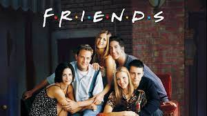
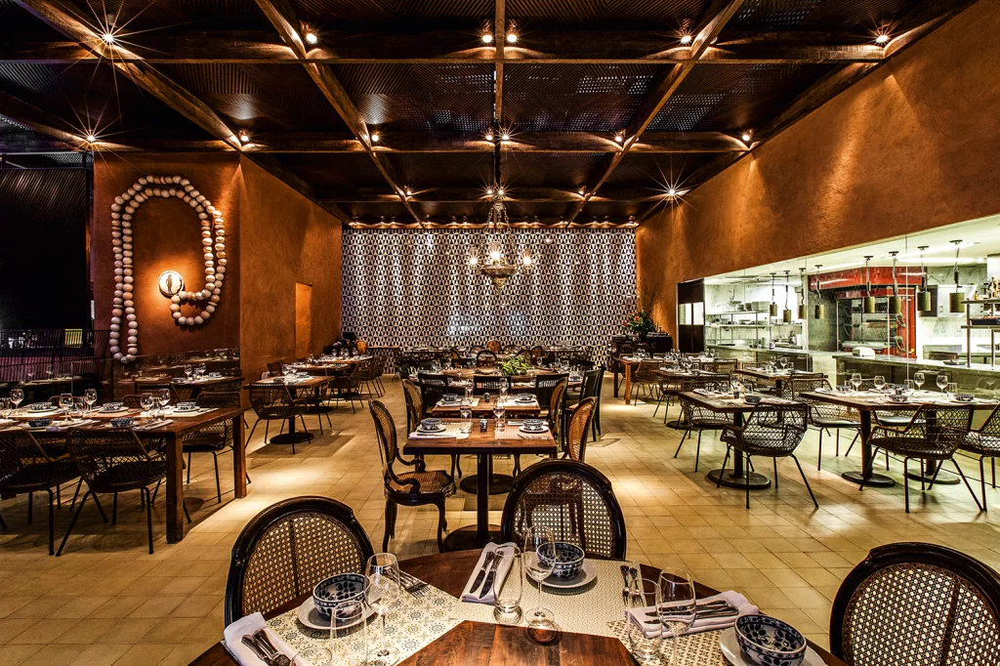
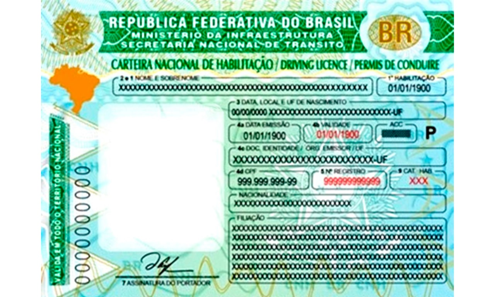

Minhas viagens
Uma das minhas atividades preferidas é viajar! Amo conhecer novos lugares, vivenciar rotinas e culturas diferentes.
Minhas viagens preferidas foram: Estados Unidos(Orlando, Los Angeles e Las vegas), Uruguai(Montevideo e Punta del Este) e Argentina(Buenos Aires)
 |

|
|---|
Hobbies
- Amo assitir séries, minhas favoritas são Friends e American Horror Story
- Adoro ir para a academia, cuidar do meu corpo me motiva a ir atrás da minha melhor versão todos os dias
- Conhecer novos restaurantes é uma atividade que tenho prazer em fazer é experimentar novos restaurantes e culinárias diferentes
- Sair com meus amigos sempre me deixa muito animado, pois adoro conversar com pessoas
|  |  |
|---|
Curiosidades
- Aos 10 anos, consegui fazer a proeza de quebrar o braço caindo em uma piscina que estava vazia
- Fiz aula de canto por mais de 3 anos e violão por 1 ano
- Gosto de correr, adoro praticar corrida em parques e em esteiras
Metas e objetivos
| Metas de curto prazo | Realizar um intêrcambio | Tirar minha CNH |
|---|---|---|
| Metas de médio prazo | Conseguir um estágio | alugar um apartamento |
| Metas de longo prazo | Me formar | Casar |
|  |
|---|